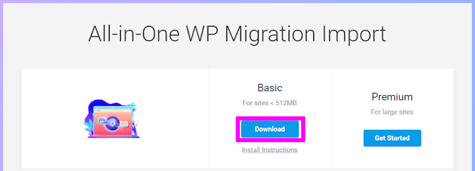

結果、サイトの表示速度がめちゃくちゃ早くなりました！
その代わり、サーバー代が月880円掛かるようになってしまいました。
でもまあ、容量が許す限り WordPress を置けるし、静的サイトの運営もできるので、使いこなせばお得になるんじゃないかと思っています。
そんなこんなで、mixhost サーバー への移転手順を説明していきます。
と言っても、私も説明どおりに進めただけなので、大した事ないです。
簡単でした。
はじめに
プラグイン「All-in-One WP Migration」を使って WordPress 移転方法を説明します。
https://wordpress.org/plugins/all-in-one-wp-migration/
ざっくりとした流れは、旧WordPress から記事をエクスポートして、新WordPress にインポートするだけです。
エクスポート
まず、旧WordPress に プラグイン「All-in-One WP Migration」を入れます。
ダッシュボードの左メニューから「プラグイン」の「新規追加」を選択します。
プラグインの検索に「All-in-One WP Migration」と入力し、インストールします。
インストールが完了したら有効化します。
有効化できたら、ダッシュボードの左メニューから「All-in-One WP Migration」の「エクスポート」を選択します。
「エクスポート先」を「ファイル」に変更します。
エクスポートが完了するとダウンロードが出来るようになります。

旧WordPress の エクスポートはこれで完了です。
mixhost に WordPress を設置
レンタルサーバー を契約
移転先の レンタルサーバー を契約します。
mixhost の ユーザー登録は割愛です。
10日間の無料お試し期間があるので、とりあえず試してみのもありです。
私は10日間の無料お試し期間を使い切る前に、有料版にアップグレードしちゃいました。
ユーザー登録を終えると、mixhost の マイページに入れるようになります。
マイページで「サービス」の「新しいサービスを注文」を選択します。
10日間無料お試しの「スタンダード」を選択して「続ける」を選択します。
サブドメインが1つ無料で貰えます。
要らないので受け取りたくないんですが、受け取らない選択肢が無いので、適当に貰っておきます。
サービス内容に間違いが無ければ「お客様情報の入力」を押します。
個人情報を入力して「利用規約に同意」にチェックを入れて「注文完了」を押せば完了です。
まあ、利用規約読めなかったんですけどね。
ドメイン を追加
契約した レンタルサーバーに ドメイン を追加します。
無限にドメインを追加できるので、容量が許す限り サイト運営ができます。
マイページから「cPanel」にログインします。
ドメイン欄の「アドオン ドメイン」を選択します。
「新しいドメイン名」に追加するドメインを入力します。
「サブドメイン」はよく分からなかったので適当に入力しました。
「ドキュメントルート」は自動でドメイン名が入るので変更しなくて大丈夫です。

「ドメインの追加」を押せば完了です。
でも、まだネームサーバーの設定が出来てないので、受け入れ準備が出来た状態ですね。
WordPress を設置
契約した レンタルサーバーに WordPress を設置します。
マイページから「cPanel」にログインします。
「SOFTACULOUS APPS INSTALLER」の「WordPress」を選択します。
インストールする WordPress の説明が表示されるので「今すぐインストール」を選択します。
インストールする WordPress の設定をします。
バージョンは、旧WordPress と同じものを選択します。
管理者アカウントは、旧WordPress をインポートすると消えてしまうので、適当で大丈夫です。
言語もインポートで消えるので適当です。
DBとテーマもインポートされるので設定不要です。
必須項目の設定を済ませたら「インストール」を押します。
これで、WordPress の設置は完了です。

hosts ファイル を一時的に書き換える
「ブログが見れない期間」を作りたくないので、新WordPress が完成するまで 旧WordPress を見れるようにしておきます。
新WordPress の設定を済ませたいが、ドメインが無いと 新WordPress の設定が出来ません。
ここでジレンマが発生します。
旧WordPress はアクセス出来る状態で、新WordPress の設定をしたい。
これを解決するために、hosts ファイル を一時的に書き換える方法をとります。
この設定をすると、サーバーの IP に一時的ですがドメインでアクセス出来るようになります。
管理者権限でメモ帳を開く
スタートメニューから「メモ帳」を探して、右クリックメニュー内の「管理者として実行」から起動させます。
メモ帳のメニューの「開く」から、下記「hosts」ファイルをファイル名に入力して開きます。
1 | C:\Windows\System32\drivers\etc\hosts |
開いた「hosts」ファイルの末尾に、下記を追記して保存します。
1 | サーバーのIPアドレス [半角スペース] ドメイン名 |
これで、一時的にドメインの見先を mixhost のサーバに出来ます。
もちろん自分の PC だけなので、この間に 新WordPress の設定を済ませます。
サーバーの IP アドレスの調べ方
「cPanel」の右メニューの「サーバー情報」を選択し、
「共有 IP アドレス」がサーバーの IP アドレスになります。
インポート
新WordPress の管理画面に入れるようになったので、旧WordPress からエクスポートした記事をインポートします。
新WordPress に プラグイン「All-in-One WP Migration」を入れます。
入れ方は エクスポート と同じ手順なので割愛。
有効化できたら、ダッシュボードの左メニューから「All-in-One WP Migration」の「インポート」を選択します。
「インポート先」を「ファイル」に変更します。
ファイルアップロードサイズを上げる方法
サイトの最大アップロードサイズを超過した場合
この場合は、もう一つプラグインをインストールします。
「All-in-One WP Migration Import」
https://import.wp-migration.com/
Basic の Download でファイルをダウンロードし、

プラグインの新規追加でインストールします。
有効化すると、サイトの最大アップロードサイズに関係なく インポートファイルがアップロード出来るようになります。
ファイルのアップロードが完了すると、最終確認が出るので「開始」を押します。
これでインポート作業は完了です。
hosts ファイル を戻す
インポート前に設定した hosts ファイル を元に戻します。
ネームサーバー を変更
最後にネームサーバー を、旧WordPress サーバーから mixhost の新WordPress サーバーに 変更します。
Cloudflare の DNS 変更
私は Cloudflare を使用しているので、DNS を変更しました。

Content の IP アドレスを mixhost の新WordPress サーバーに 変更します。

これだけで、即時反映されます。
おわりに
手順はたくさんありますが、やっていることは至極簡単なので、時間があればすぐ出来ちゃいます。
WordPress 1つだけだともったいないので、これから色々遊んでいけたらと思います。